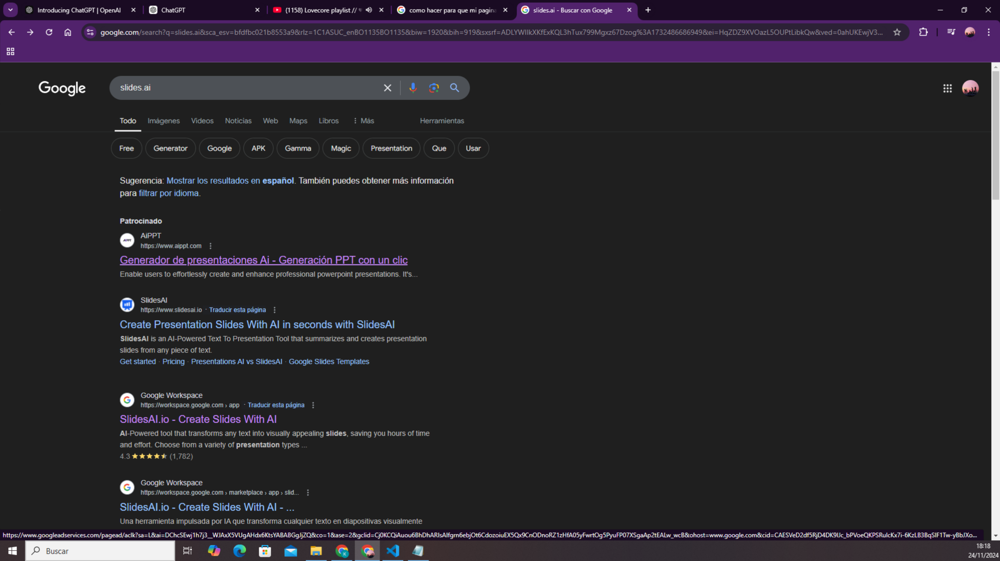
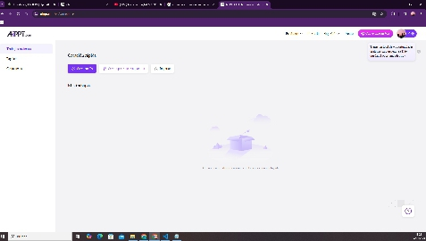
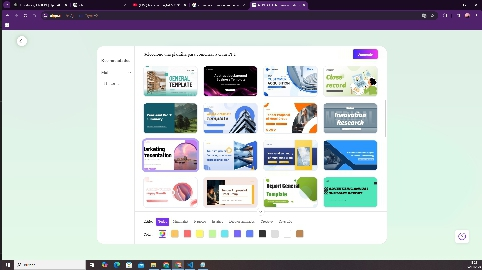
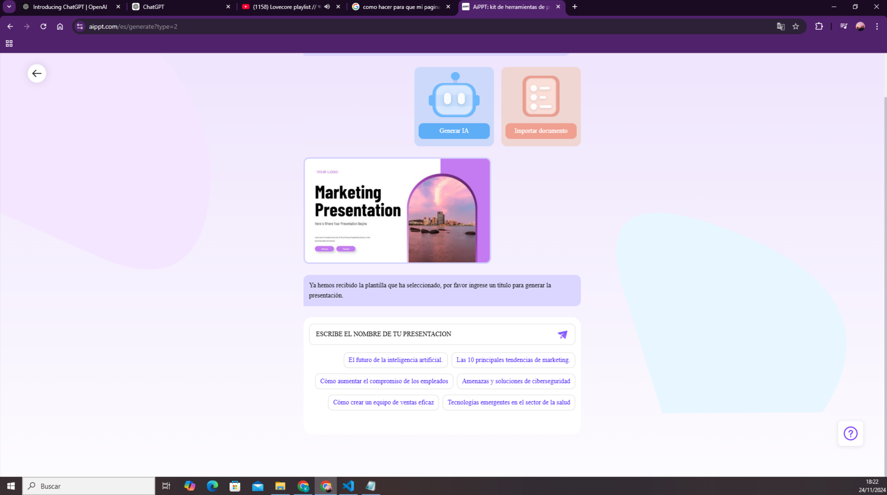
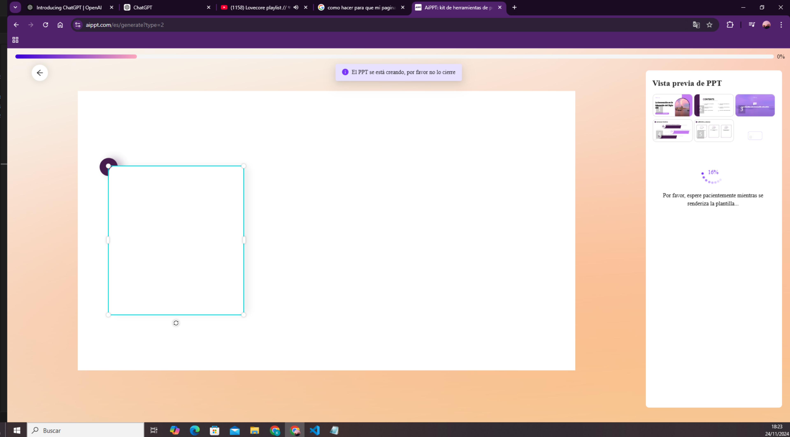
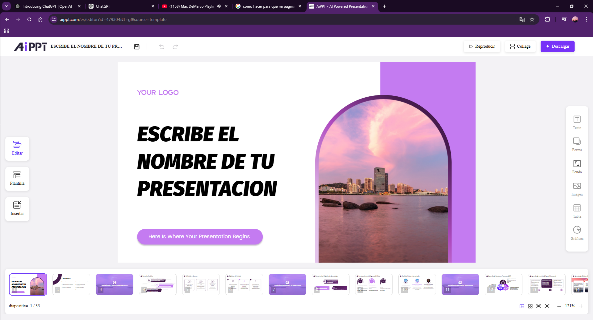
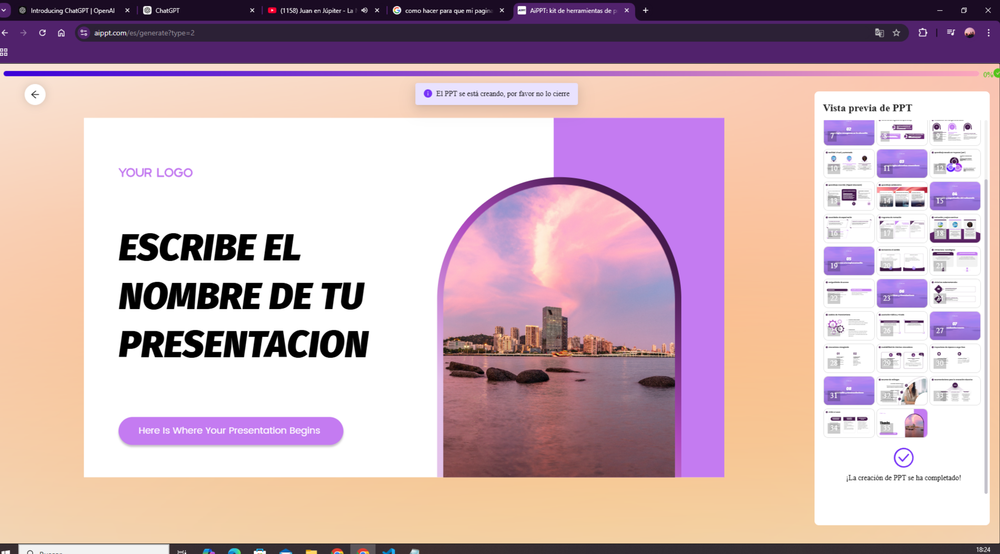
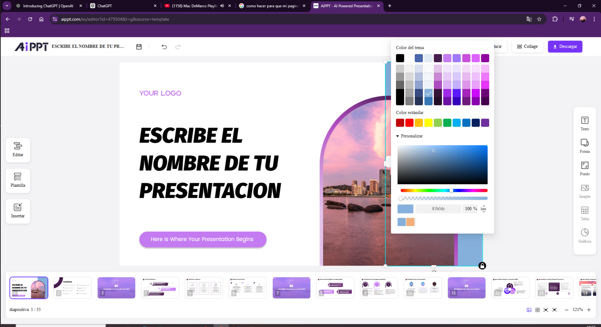
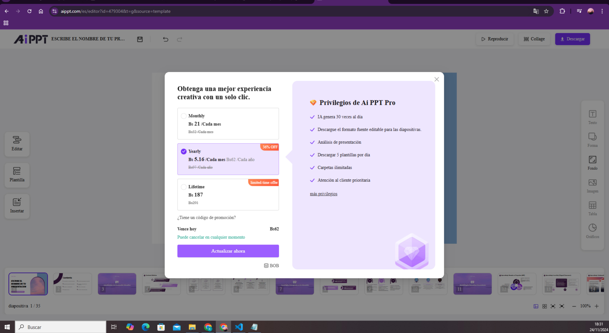
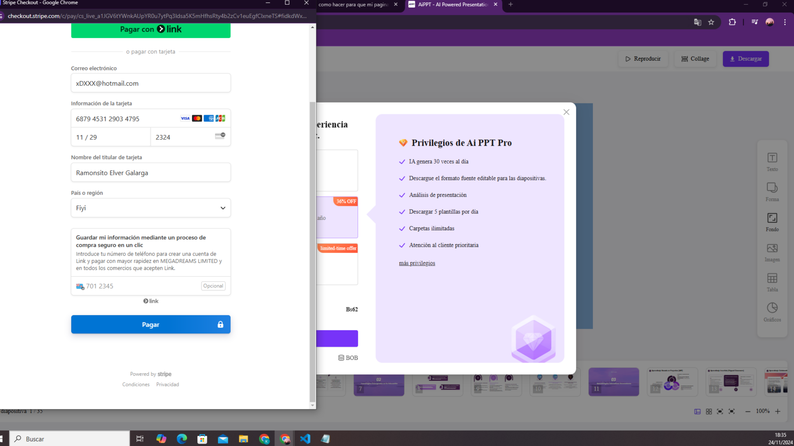

¿Que es Slides.ai?
- Slides.ai es una herramienta útil para cualquiera que necesite crear presentaciones de manera rápida y efectiva, aprovechando la inteligencia artificial para simplificar el proceso. Si estás interesado en crear presentaciones de manera más eficiente, puede ser una opción a considerar.
A continuacion te enseñaremos coo usarla:
Paso 1: Registrate en Slides.ai


Cuidado, no te confundas con "Slider.io"
- Visita el sitio web: Abre tu navegador y ve a Slides.ai.
- Crea una cuenta: Haz clic en "Registrarse" y completa el formulario con tu información (nombre, correo electrónico, contraseña). También puedes registrarte usando tu cuenta de Google o LinkedIn.
Paso 2: Iniciar Sesión
Prometo que no voy a ver tu contraseña :*
- Accede a tu cuenta: Una vez registrado, inicia sesión con tus credenciales.
Paso 3: Crear una Nueva Presentación

Se creativo a la hora de cear tus presentaciones
- Selecciona "Crear Nueva Presentación": En el panel de control, haz clic en el botón "Crear Nueva Presentación".
Paso 4: Elegir una Plantilla

¿Quien habra creado tantas plantillas?
- Selecciona una plantilla: Slides.ai ofrece varias plantillas prediseñadas. Elige una que se adapte a tus necesidades y haz clic en "Usar esta plantilla".
Paso 5: Personalizar el Título

Tu titulo tiene que ser muy llamativo
- Edita el título de la presentación: Haz clic en el área del título y escribe el nombre de tu presentación.
Paso 6: Agregar Diapositivas

Cuidado que te emociones y acabes creando mil diapositivas
- Añadir nuevas diapositivas: Haz clic en el botón "Agregar Diapositiva" para incluir más contenido. Puedes elegir diferentes tipos de diapositivas (título, texto, imagen, etc.).
Paso 7: Insertar Contenido

¿Y si pones un kiwi?
- Agregar texto e imágenes: Haz clic en los cuadros de texto para editar el contenido. Para agregar imágenes, selecciona la opción "Insertar Imagen" y sube tus archivos o elige de la biblioteca de imágenes.
Paso 8: Usar la IA para Generar Contenido

Al final del dia, solo somos la ia de Slides.ai y yo contra el mundo
- Generar contenido con IA: Utiliza la función de inteligencia artificial de Slides.ai para generar texto o ideas. Simplemente haz clic en "Generar Contenido" y sigue las instrucciones.
Paso 9: Personalizar el Diseño

Me gusta el color verde :3
- Ajustar el diseño: Cambia los colores, fuentes y estilos de las diapositivas desde el panel de diseño. Asegúrate de que tu presentación sea visualmente atractiva.
Paso 10: Previsualizar la Presentación
Voy a traer mis palomitas para ver las presentaciones
- Ver la presentación: Haz clic en "Previsualizar" para ver cómo se verá tu presentación en modo de presentación. Asegúrate de que todo esté en orden.
Paso 11: Guardar tu Trabajo

¿Te imaginas pasar dos semanas creando un trabajo para que al final se te borre todo un dia antes? Es anecdota
- Guardar la presentación: No olvides guardar tu trabajo. Haz clic en "Guardar" y elige un nombre para tu archivo.
Paso 12: Registrate para tener una cuenta premium

Solo puedes gusrdar tu trabajo como PDF si tienes la version de paga, yo soy pobre
- Cuando te registres con la version de pago de Slides.AI podras compartir tu trabajo y descargarlo en mejor calidad